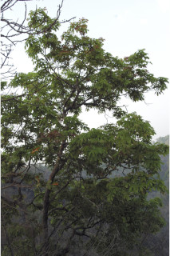
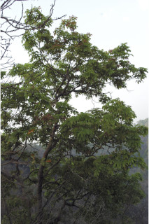
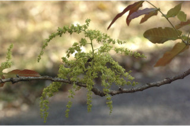
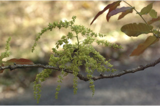

Large deciduous trees up to 20 m tall.
20 ಮೀ ಎತ್ತರದವರೆಗಿನಎಲೆಯುದುರುವ,ದೊಡ್ಡ ಗಾತ್ರದ ಮರಗಳು.
Large deciduous trees up to 20 m tall.
பெரிய இலையுதிர் மரம் 20 மீ. உயரம் வரை வளரக்கூடியது.
Trunk fluted; bark grey, irregularly scaly; blaze pink.
ಕಾಂಡ ಕೊರಕಲುಗಳನ್ನೊಳಗೊಂಡಿರುತ್ತದೆ;ತೊಗಟೆ ಬೂದು ಬಣ್ಣದಲ್ಲಿದ್ದು ಅನಿಯತವಾಗಿ ಚಕ್ಕೆಯೇಳುವ ರೀತಿಯಲ್ಲಿರುತ್ತದೆ;ಕಚ್ಚು ಮಾಡಿದ ಜಾಗ ನಸುಗೆಂಪಾಗಿರುತ್ತದೆ.
Trunk fluted; bark grey, irregularly scaly; blaze pink.
மரத்தண்டு குறுக்குவெட்டுத் தோற்றத்தில் ஒழுங்கற்ற வளையமானது; மரத்தின் பட்டை சாம்பல் நிறமானது, ஒழுங்கற்ற செதில்களாக உதிருபவை; உள்பட்டை பிங்க் நிறமானது.
Young branchlets terete, pubescent.
ಎಳೆಯ ಕಿರುಕೊಂಬೆಗಳು ದುಂಡಾಗಿದ್ದು ಮೃದು ತುಪ್ಪಳದಿಂದ ಕೂಡಿರುತ್ತವೆ.
Young branchlets terete, pubescent.
சிறியநுனிக்கிளைகள் குறுக்குவெட்டுத் தோற்றத்தில் வளையமானது, உரோமங்களுடையது.
Leaves compound, paripinnate, alternate, spiral; rachis pulvinate, glabrous; petiolule up to 0.3 cm long, glabrous, leaflets 2-3 pairs, opposite, increasing in size towards apex, 4-26 x 1.8-9 cm, variable in shape, elliptic-oblong to oblanceolate - obovate, apex rounded, sometimes emarginate, base asymmetric, cuneate to rounded, margin entire, thinly coriaceous, glabrous; midrib thinly raised above; secondary_nerves ca. 16 pairs, straight and curved near margin; tertiary_nerves reticulo-percurrent.
ಎಲೆಗಳು ಸಂಯುಕ್ತವಾಗಿದ್ದು ಸಮಗರಿ ರೂಪಿಗಳಾಗಿರುತ್ತವೆ, ಪರ್ಯಾಯ ಮತ್ತು ಸುತ್ತು ಜೋಡನಾ ವ್ಯವಸ್ಥೆಯಲ್ಲಿರುತ್ತವೆ;ಅಕ್ಷದಿಂಡು ಉಬ್ಬಿದ ಬುಡದ ಸಮೇತವಿದ್ದು, ರೋಮರಹಿತವಾಗಿರುತ್ತದೆ;ಉಪತೊಟ್ಟು 0.3 ಸೆಂ.ಮೀ.ವರೆಗಿನ ಉದ್ದವಿದ್ದು, ರೋಮರಹಿತವಾಗಿರುತ್ತದೆ;ಉಪಪತ್ರಗಳು 2 ರಿಂದ 3 ಜೋಡಿಗಳಿದ್ದು, ಅಭಿಮುಖಿ -ಯಾಗಿರುತ್ತವೆ, ಮತ್ತು ಮೇಲೆ ಹೋದಂತೆಲ್ಲಾ ಗಾತ್ರ ಹೆಚ್ಚುತ್ತಾ ಹೋಗುತ್ತದೆ, ಗಾತ್ರದಲ್ಲಿ 4-26 X 1.8 - 9 ಸೆಂ.ಮೀ. ಹೊಂದಿದ್ದು,ಆಕಾರದಲ್ಲಿ ವೈವಿಧ್ಯತೆ ಹೊಂದಿರುತ್ತವೆ,ಅಂಡವೃತ್ತ-ಚತುರಸ್ರದಿಂದ ಬುಗುರಿಭರ್ಜಿ-ಬುಗರಿ ರೀತಿಯವರೆಗಿನ ಆಕಾರ,ದುಂಡಾಗಿರುವ ಕೆಲವು ವೇಳೆ ಅಗ್ರದಲ್ಲಿ ಧೀರ್ಘ ಕಚ್ಚುಳ್ಳ ಮಾದರಿಯ ತುದಿ, ಅಸಮ್ಮಿತಿಯಾದ,ಬೆಣೆಯಾಕಾರದದಿಂದ ದುಂಡಾಗಿರುವರೆಗಿನ ಮಾದರಿಯ ಬುಡ, ನಯವಾದ ಅಂಚು,ತೆಳು ತೊಗಲನ್ನೋಲುವ ಮೇಲ್ಮೈ ಹೊಂದಿದ್ದು ರೋಮರಹಿತ -ವಾಗಿರುತ್ತವೆ;ಮಧ್ಯನಾಳ ಮೇಲ್ಭಾಗದಲ್ಲಿ ತೆಳುವಾಗಿ ಮೇಲೆದ್ದಿರುತ್ತದೆ; ಎರಡನೇ ದರ್ಜೆಯ ನಾಳಗಳು ಅಂದಾಜು 16 ಜೋಡಿಗಳಿದ್ದು, ನೇರವಾಗಿದ್ದು,ಅಂಚಿನ ಬಳಿ ಬಾಗಿರುತ್ತವೆ;ಮೂರನೇ ದರ್ಜೆಯ ನಾಳಗಳು ಜಾಲಬಂಧ ನಾಳ ವಿನ್ಯಾಸದಲ್ಲಿದ್ದು ಎಲೆ ದಿಂಡಿಗೆ ಅಡ್ಡವಾಗಿ ಕೂಡುತ್ತವೆ.
Leaves compound, paripinnate, alternate, spiral; rachis pulvinate, glabrous; petiolule up to 0.3 cm long, glabrous, leaflets 2-3 pairs, opposite, increasing in size towards apex, 4-26 x 1.8-9 cm, variable in shape, elliptic-oblong to oblanceolate - obovate, apex rounded, sometimes emarginate, base asymmetric, cuneate to rounded, margin entire, thinly coriaceous, glabrous; midrib thinly raised above; secondary_nerves ca. 16 pairs, straight and curved near margin; tertiary_nerves reticulo-percurrent.
இலைகள் கூட்டிலை, இரட்டைபடை சிறகுவடிவக்கூட்டிலை (பேரிபின்னேட்), மாற்றுஅடுக்கமானவை, சுழல் போன்று அமைந்தவை; மத்தியகாம்பு (ராக்கிஸ்) பல்வினேட், உரோமங்களற்றது; சிற்றிலைக்காம்பு 0.3 செ.மீ. நீளமானது, உரோமங்களற்றது, சிற்றிலைகள் 2-3 ஜோடிகள், எதிரடுக்கமானவை, நுனியிலுள்ள சிற்றிலைகள் தளத்திலுள்ளவையை விட பெரியது, 4-26 X 1.8-9 செ.மீ., வெவ்வேறு வடிவுடையது, நீள்வட்டம்-நீள்சதுர வடிவானது முதல் தலைகீழ் ஈட்டி வடிவானது-தலைகீழ் முட்டை வடிவானது, அலகின் நுனி வட்டமானது, சிலசமயங்களில் பள்ளங்களுடையது (ஈமார்ஜினேட்), அலகின் தளம் சமமற்றது, ஆப்பு வடிவானது முதல் வட்டமானது, அலகின் விளிம்பு முழுமையானது, மெல்லிய கோரியேசியஸ், உரோமங்களற்றது; மையநரம்பு மேற்புறத்தில் அலகின் பரப்பைவிட சிறிது உயர்ந்து இருக்கும்; இரண்டாம் நிலை நரம்புகள் 16 ஜோடிகள், நோரானது மற்றும் விளிம்பின் அருகில் வளைந்தவை; மூன்றாம் நிலை நரம்புகள் வலைப்பின்னல்-பெர்க்கரண்ட் போன்றவை.
Inflorescence axillary panicles; flowers polygamodioecious, subsessile.
ಪುಷ್ಪಮಂಜರಿಗಳು ಅಕ್ಷಾಕಂಕುಳಿನಲ್ಲಿನ ಪುನಾರಾವೃತ್ತಿಯಾಗಿ ಕವಲೊಡೆಯುವ ಮಾದರಿಯವು;ಹೂಗಳು ಸಂಕೀರ್ಣಲಿಂಗಿಗಳಾಗಿದ್ದು ಗಂಡು ಮತ್ತು ಹೆಣ್ಣು ಹೂಗಳು ಬೇರೆ ಬೇರೆ ಸಸ್ಯಗಳಲ್ಲಿರುತ್ತವೆ ಮತ್ತು ಉಪತೊಟ್ಟುಗಳನ್ನು ಹೊಂದಿರುತ್ತವೆ.
Inflorescence axillary panicles; flowers polygamodioecious, subsessile.
மஞ்சரி இலைக்கோணங்களில் காணப்படுபவை, பேனிக்கிள் வகை மஞ்சரி; மலர்கள் பாலிகேமொடையீசியஸ், காம்பற்றது அல்லது மிகச்சிறிய காம்புடையது.
Drupe, 1.5 x 1 cm, ellipsoid, apiculate, echinate; seeds 1-2 enclosed in aril.
ಡ್ರೂಪ್ಗಳು1.5 X 1ಸೆಂ.ಮೀ ಗಾತ್ರ ಹೊಂದಿದ್ದು,ಅಂಡವೃತ್ತದ ಆಕಾರದಲ್ಲಿದ್ದು, ಅಗ್ರದಲ್ಲಿ ಸೂಕ್ಷ್ಮ ಮೊನಚು ಮುಳ್ಳಿನ ಸಮೇತವಿರುತ್ತವೆ ಹಾಗೂ ಕಂಟಕ ಚರ್ಮದ ಸಮೇತವಿರುತ್ತವೆ;ಬೀಜಗಳು 1 ರಿಂದ 2 ಇದ್ದು, ಪತ್ರೆಯಿಂದ ಆವೃತಗೊಂಡಿರುತ್ತವೆ.
Drupe, 1.5 x 1 cm, ellipsoid, apiculate, echinate; seeds 1-2 enclosed in aril.
உள்ளோட்டுத்தசைகனி (ட்ரூப்), 1.5 X 1 செ.மீ., நீள்வட்ட வடிவானது, நீட்சியுடையது, முட்களுடையது; விதைகள் 1-2 பத்ரி (ஏரில்) உடையது.
 



 
